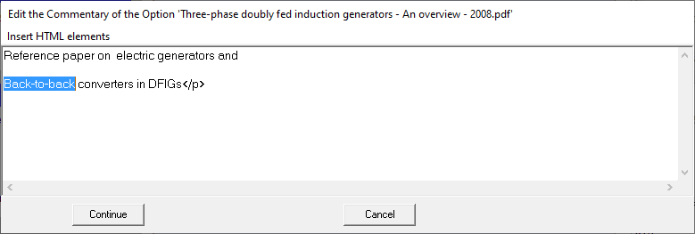
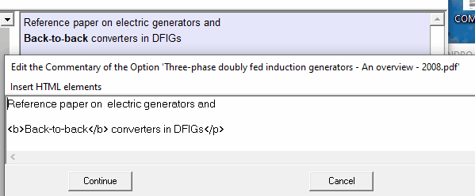
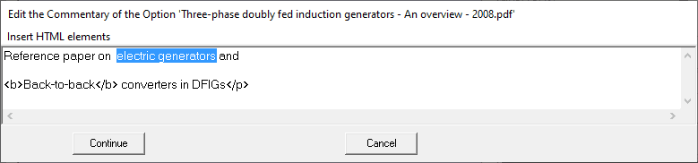
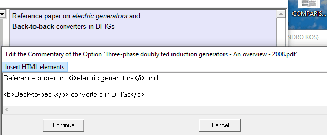
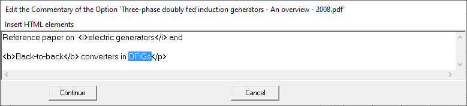
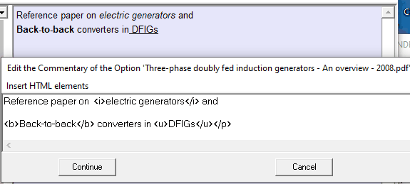

The procedure to change a part of the text to bold, italic or underlined is similar to the one described in Insert a new paragraph": you first select the text to change its format and then execute the "Menu Option" mentioned in the following tables.
- Text in bold.
HTML text |
Result |
Menu option |
Text in <b>bold</b>. |
Text in bold. |
"Add text in bolf Font" |
Example:

After applying the menu option Add text in bold font becomes:

- Text in italic font
HTML text |
Result |
Menu option |
Text in <i>italic</i>. |
Text in italic. |
"Add text in italic Font" |
Example:

After applying the menu option Add text in italic font becomes:

- Text in underline font
HTML text |
Result |
Menu option |
Text in <i>underline</i>. |
Text in underline. |
"Add text in underline Font" |
Example:

After applying the menu option Add text in underline font becomes:
